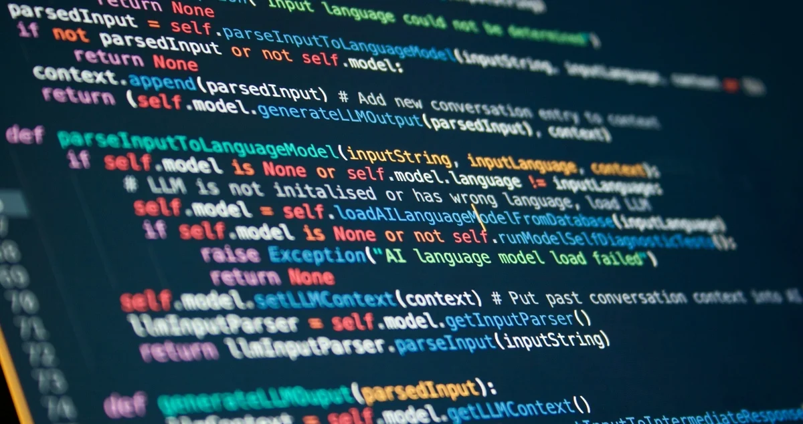

O predmetu
Predmet Skriptni i jezici web programiranja uvodi učenike u svijet modernog web razvoja.
Kroz teoriju i praktične zadatke učenici upoznaju tehnologije i programske jezike koji se koriste za izradu dinamičnih i interaktivnih web stranica.
Naglasak je na razumijevanju načina rada weba, pisanju kvalitetnog koda, rješavanju problema te primjeni stečenog znanja kroz samostalne projekte.

Što ćemo učiti?
Tijekom nastave obrađuju se različite teme vezane uz razvoj web aplikacija:
- Osnove skriptnih jezika
- JavaScript i njegovi osnovni koncepti
- Razvoj jednostavnih web stranica
Kako izgleda nastava?
Nastava se temelji na kombinaciji teorijskog gradiva, praktičnih vježbi i projektnih zadataka.
Nakon upoznavanja s određenim konceptom slijedi njegova primjena kroz programiranje. Na taj način učenici postupno razvijaju logičko razmišljanje i sposobnost samostalnog rješavanja programerskih problema.